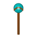
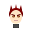
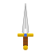
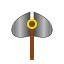
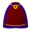
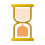
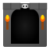

👥 Персонажи (Characters)
#01

Посох Фрирен
#02
Портрет Фрирен
#03
Портрет Ферн
#04

Портрет Штарка
#05
Портрет Химмеля
#06
Портрет Хайтера
#07
Портрет Айзена
✨ Магия и заклинания (Magic & Spells)
#08
Магический круг
#09

Zoltraak
#10
Магия цветов
#17

Сфера маны
#28
Барьер
#29
Огненная магия
#30
Ледяная магия
⚔️ Оружие и предметы (Weapons & Items)
#11

Меч героя
#12

Боевой топор
#13
Гримуар
#22
Зелье
#23
Сундук
#26
Кристалл
#31
Дорожная сумка
#35
Магическое кольцо
🎭 Символы и аксессуары (Symbols & Accessories)
#14
Эльфийское ухо
#15
Корона демона
#16
Шляпа мага
#18
Святой символ
#19
Знак отряда
#27
Череп демона
#32
Гильдейская карта
#36

Плащ мага
#39
Крылатая эмблема
#40
Украшение волос
🏰 Локации и атмосфера (Locations & Atmosphere)
#20
Закат путешествия
#21

Песочные часы
#24
Карта приключений
#33
Ночные звёзды
#34
Мемориал
#37

Вход в подземелье
#38
Перо
👹 Монстры (Monsters)
#25
Мимик